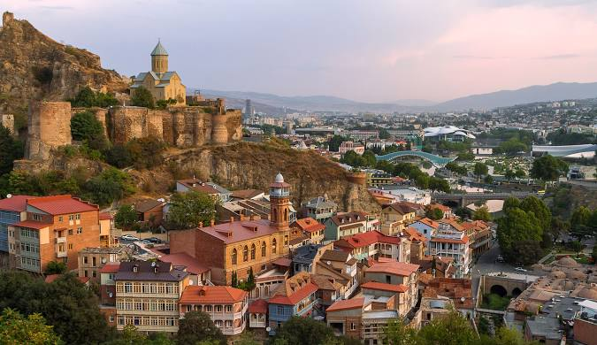
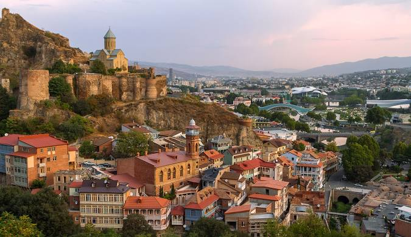
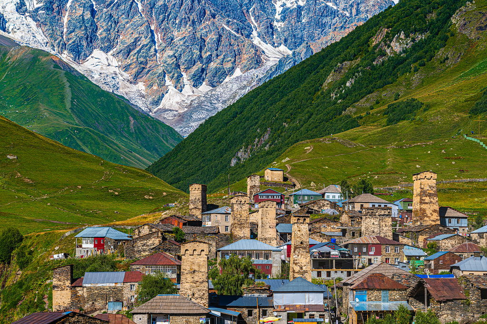
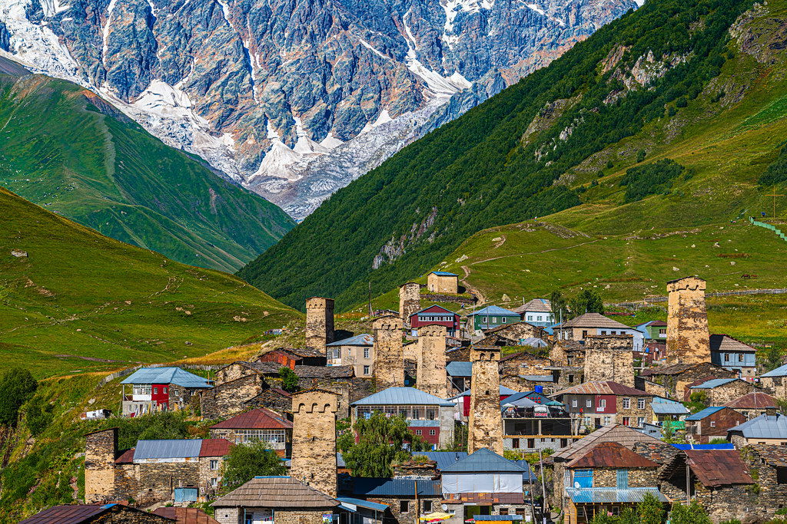

Our History and Mission
About Us
Our website was created with one goal in mind — to share the beauty, uniqueness, and diversity of Tbilisi with you.
Tbilisi is a city where history and modernity coexist harmoniously. Our team is dedicated to making every corner and
cultural treasure of this special city accessible and meaningful to everyone.
Why Choose Us?
Deep Knowledge: Our team provides detailed and reliable insights about Tbilisi.
Responsibility: We understand the importance of every detail, whether it’s finding the right tourist guide or booking the perfect hotel.
User-Centered Design: Our services and information are tailored for users of all ages and interests.
Our website is more than just an information hub; it’s a bridge that connects people with the heart and soul of Tbilisi’s culture.
Meet Our Team
We are a group of passionate, young professionals committed to showcasing the unique spirit of Tbilisi:
Tour Guides who know every hidden gem and corner of the city.
Storytellers who bring Tbilisi’s rich past to life through captivating narratives.
Designers and Developers who created this platform to ensure your experience is seamless and enjoyable.
What We Promise
A memorable journey in discovering the wonders of Tbilisi.
Easily accessible, accurate, and timely information.
Thoughtful care and attention to every detail of your experience.
If you’d like to learn more about us or have any questions, don’t hesitate to get in touch. Our mission is to make your journey and experience in Tbilisi truly unforgettable!
 

 
